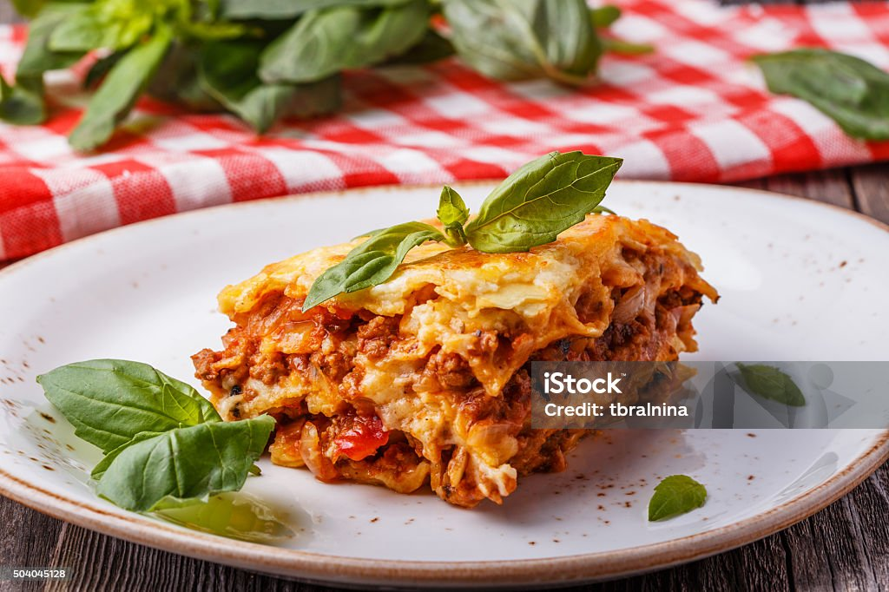

Cook a simple tomato-meat sauce by sautéing onion and garlic, browning ground beef, then simmering with crushed tomatoes, salt, pepper, and Italian herbs until thick. Mix ricotta with an egg, Parmesan, and a pinch of seasoning for the creamy layer.
Layer sauce, lasagna noodles, ricotta mix, and mozzarella in a baking dish, repeating until full and finishing with sauce and cheese on top. Cover and bake at 180°C/350°F until bubbly, uncover briefly to brown, then rest a few minutes before cutting.
cooking steps